Genome-wide Selection Scans
Predicting Selection from Time-series Data
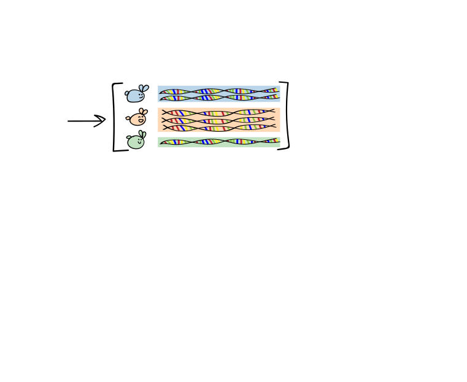
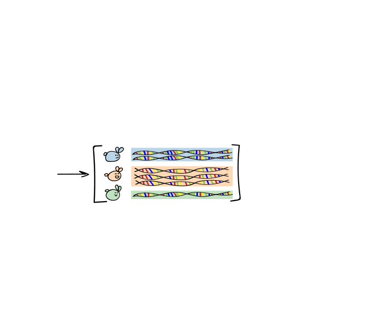
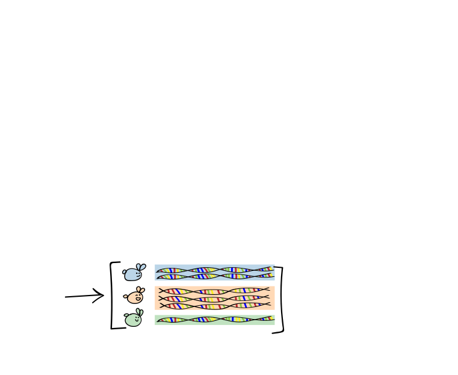
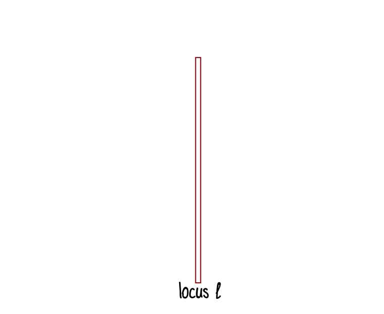
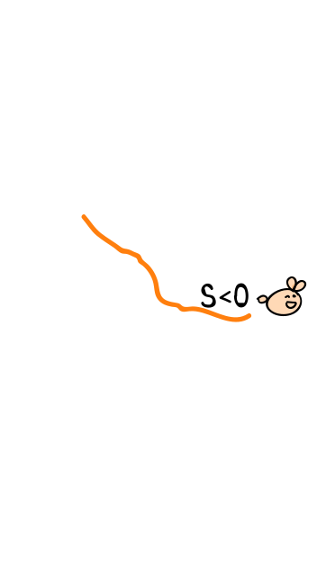

Challenges
- Demography influences selection inference
- Joint inference is too costly genome-wide
- Neighbour loci are linked and show similar absolute values of selection:
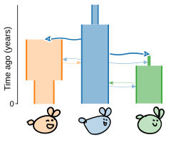
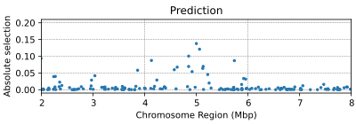
Existing Work on Linked Selection
- Windows over single-locus estimates — Mathieson&Terhorst (2022)
Each locus is still estimated on its own; windows only summarise afterwards
- Two linked loci — He et al. (2020)
Limited to a pair of sites
- Gaussian process over many loci — Terhorst et al. (2015)
Runtime grows quadratically with the number of loci: small windows only
- Ancestral recombination graphs, CLUES — Vaughn & Nielsen (2024)
Requires an inferred ARG
- Deep learning, Timesweeper — Whitehouse & Schrider (2023)
Needs extensive forward simulations, impractical for large human populations
Two-layer Hidden Markov Model that:
- Infers demography and selection jointly for multiple populations from allele counts
- Scales to genome-wide scans (in case of 1 population)
- Models linked selection along the genome
Motivating Example
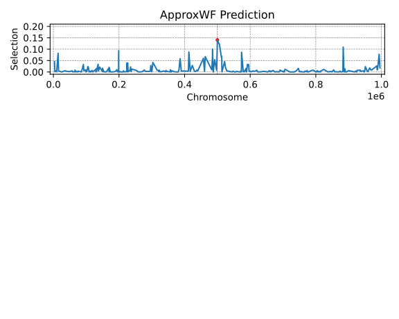
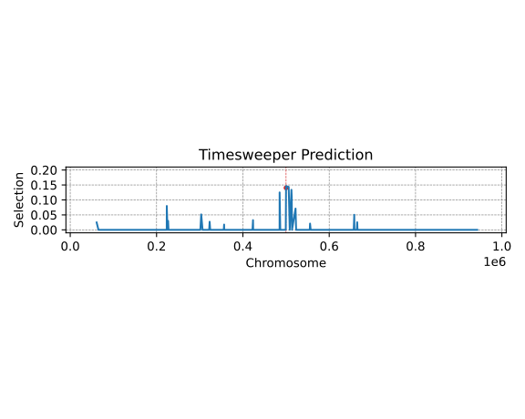
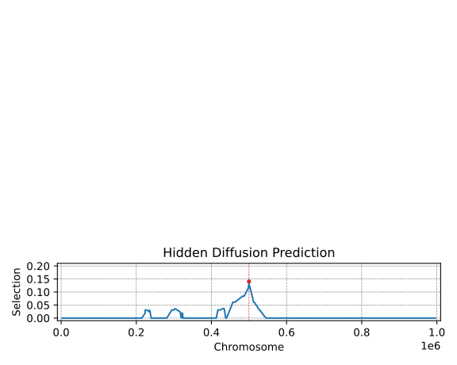
Method
Hidden Markov Model (HMM)
$\text{Hidden States} = \Big\{$
$,\ $
$\Big\}$
$\text{Observations} = \Big\{$
$,\ $
$\Big\}$
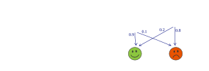
MCMC can learn HMM parameters $\bar{\theta}$: transition and emission probabilities
: Two-layer HMM
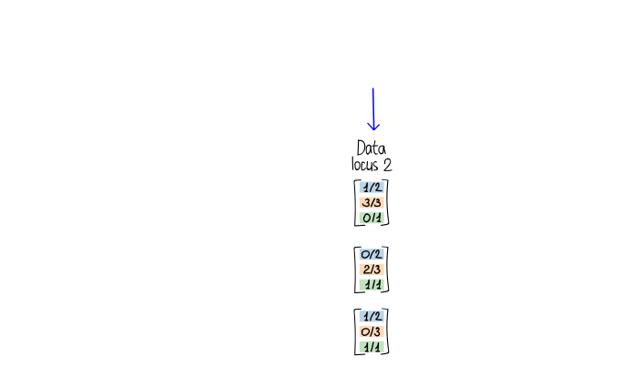
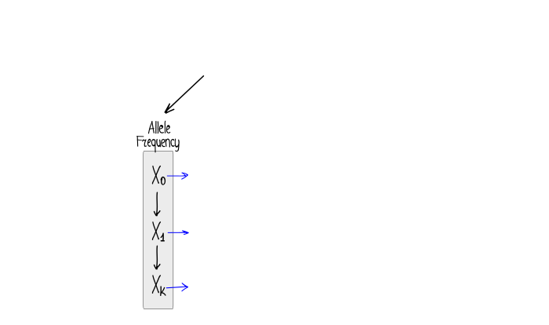
Layer 1: Spatial
Layer 1: Spatial
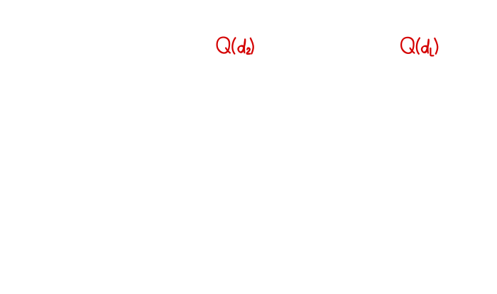
Ideas for Transition Matrix
- Absolute selection of neighbouring loci should be similar
- Most positions in genome are neutral
-
Infer absolute selection $|s|$ and sign $\sigma$
$\sigma$ (linkage phase) is independent of $|s|$, with equal transition probabilities
Transition Matrix
Transition matrix inspired by Galimberti et al. (2020):
$$Q(d_l) = \exp(d_l \cdot \Lambda),$$
$$ \text{where } \Lambda = \K \cdot \overset{\displaystyle \begin{array}{ccccccc} \mcell{\matindex{s_0=0}} & \mcell{\matindex{s_1}} & \mcell{\matindex{s_2}} & \mcell{\ldots} & \mcell{\matindex{s_{M-2}}} & \mcell{\matindex{s_{M-1}}} & \mcell{\matindex{s_{M}}} \end{array}}{ \left(\begin{array}{ccccccc} -\Nu \Mu & \Nu \Mu & 0 & \ldots & 0 & 0 & 0 \\ 1 & -1-\Mu & \Mu & \ldots & 0 & 0 & 0 \\ \mcell{\vdots} & \mcell{\vdots} & \mcell{\vdots} & \mcell{\ddots} & \mcell{\vdots} & \mcell{\vdots} & \mcell{\vdots} \\ 0 & 0 & 0 & \ldots & 1 & -1-\Mu & \Mu \\ 0 & 0 & 0 & \ldots & 0 & 1 & -1 \\ \end{array}\right)} \begin{array}{l} \matindex{s_0=0} \\ \matindex{s_1} \\ \vdots \\ \matindex{s_{M-1}} \\ \matindex{s_{M}} \\ \end{array} $$- $\K$ reflects the recombination rate
- $\Nu$ reflects the fraction of neutral positions
- $\Mu$ reflects the strength of selection
Layer 2: Temporal
Layer 2: Temporal
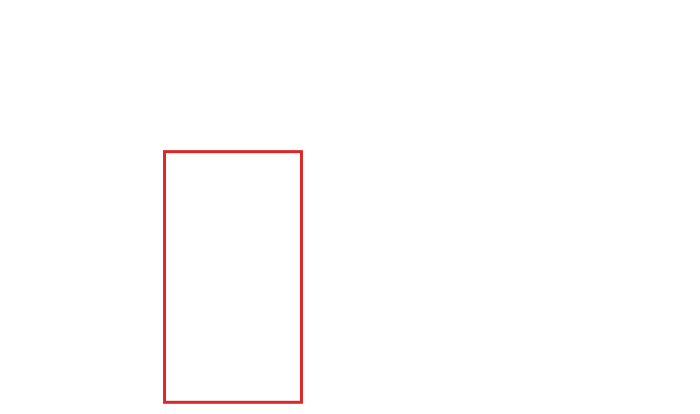
Hidden Diffusion Model
Transition density $p(\Delta t, x, y)$ is defined by demographic parameters
Hidden Diffusion Model
Transition density $p(\Delta t, x, y)$ is defined by demographic parameters
$p(\Delta t, x, y)$ is the solution of the diffusion equation:
$$\frac{\partial}{\partial \tau}p(\tau, x, y) = \frac{1}{2}\sum_{i=1}^P \frac{\partial^2}{\partial y_i^2} \left[b_{ii}(y)p(\tau, x, y)\right] - \sum_{i=1}^P \frac{\partial}{\partial y_i} \left[a_i(y) p(\tau, x, y)\right]$$where $a_i(y)$ (infinitesimal mean) and $b_{ii}(y)$ (infinitesimal variance) are defined by population sizes $\mathbf{N}$, migration rates $\mathbf{m}$ and selection $\mathbf{S}_l$
Forward Recursion
Forward variable: probability of frequency $y$ and all data up to $t_k$
$$\alpha_k(\tau,y) := P\left[ X(t_k+\tau)=y, C(t_0)=c_0, \ldots, C(t_k)=c_k \right]$$- At each sampling time, update with the data:
$\alpha_k(0, y) = \alpha_{k-1}(\Delta t_{k-1}, y)\, P\left[C(t_k) = c_k \mid X(t_k) = y\right]$ - Between sampling times, $\alpha_k$ satisfies the same diffusion equation as $p$, so we solve it to propagate $\alpha_k$
- After the last sample, the likelihood is
$$P\left[C(t_0) = c_0,\ldots, C(t_K)=c_K\right] = \int \alpha_{K}(0,y)\, dy$$
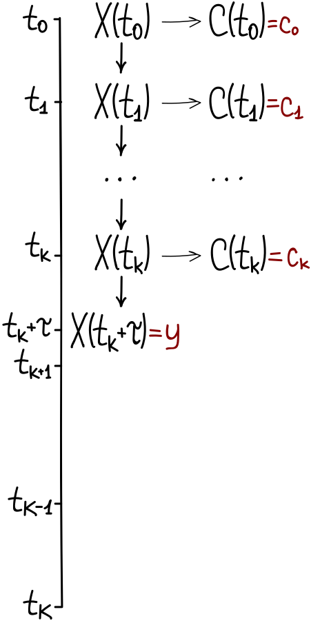
How the Two Layers Work Together
Layer 1: Spatial
- Parameters: selection $\mpar{\mathbf{S}_l} = (\mpar{S_l^1}, \ldots, \mpar{S_l^P})$ at each locus $l$, and $\K, \Nu, \Mu$
- Transitions $Q(d_l)$ between neighbouring loci, defined by $\K, \Nu, \Mu$
- Emission $P(\mathbf{C}_l \mid \mpar{\mathbf{S}_l}, \mpar{\mathbf{N}}, \mpar{\mathbf{m}})$ for each locus comes from Layer 2
Layer 2: Temporal
- Parameters: genome-wide population sizes $\mpar{\mathbf{N}}$ and migration rates $\mpar{\mathbf{m}}$, constant in time
- Allele frequencies $X(t)$ follow Wright–Fisher diffusion given $\mpar{\mathbf{N}}$, $\mpar{\mathbf{m}}$ and $\mpar{\mathbf{S}_l}$
- Forward pass gives the emission for Layer 1: $P(\mathbf{C}_l \mid \mpar{\mathbf{S}_l}, \mpar{\mathbf{N}}, \mpar{\mathbf{m}}) = \int \alpha_K(0, y)\, dy$
Inference: Metropolis–Hastings MCMC samples all parameters $\theta$ jointly from
$$P(\theta \mid \mathbf{C}) \propto \underbrace{\textstyle\prod_{l} P(\mathbf{C}_l \mid \mpar{\mathbf{S}_l}, \mpar{\mathbf{N}}, \mpar{\mathbf{m}})}_{\text{Layer 2: emissions}} \cdot \underbrace{P(\mpar{\mathbf{S}} \mid \K, \Nu, \Mu)}_{\text{Layer 1: transitions}} \cdot \underbrace{P(\K, \Nu, \Mu, \mpar{\mathbf{N}}, \mpar{\mathbf{m}})}_{\text{priors}}$$Results
All results are for a single population
Simulated Data
- SLiM simulations of one population with human-like parameters: $N = 10{,}000$, mutation and recombination rates $10^{-8}$
- 0.1 Mb chromosomes: half neutral, half with a hard sweep in the middle, $s = 0.01, \ldots, 0.05$
- 11 time points, 16 generations apart, 25 diploid individuals each
- 100 replicates: 500 sweeps and over 80,000 neutral variants
- Compared with ApproxWF, diplo-locus and bmws, given the true $N$
No Threshold Tuning Needed
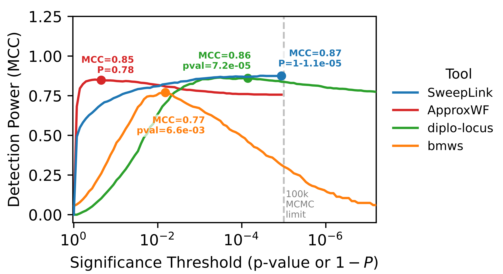
- Highest peak detection power: MCC = 0.87
- Widest range of near-optimal thresholds
- Best at the highest confidence the MCMC can resolve
Scored on genomic windows, so linked false positives count once
Comparison with Single-locus Tools
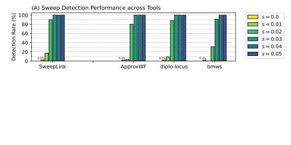
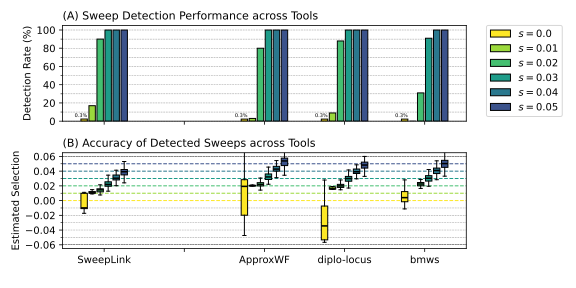
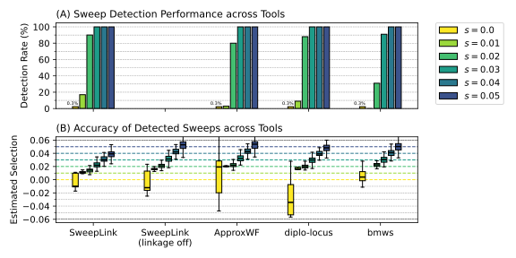
A locus is called selected when all 100,000 MCMC samples agree on the sign of $s$
Robustness
: Amount of Data
More samples: higher detection power and a tighter estimate of $\mathbf{N}$
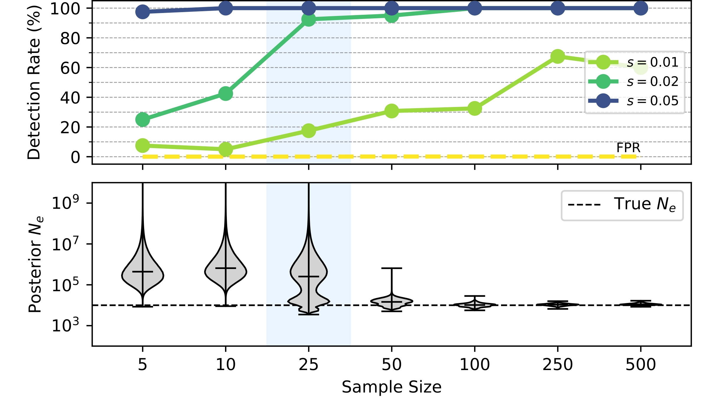
More time points: higher power, especially for weak selection
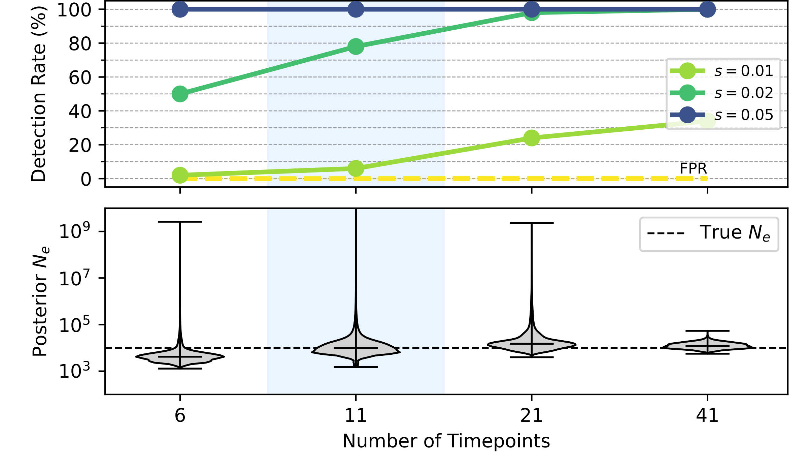
Robustness
: Linkage
Linkage is captured up to $10^{-7}$ per site per generation (given the mutation rate of $10^{-8}$)
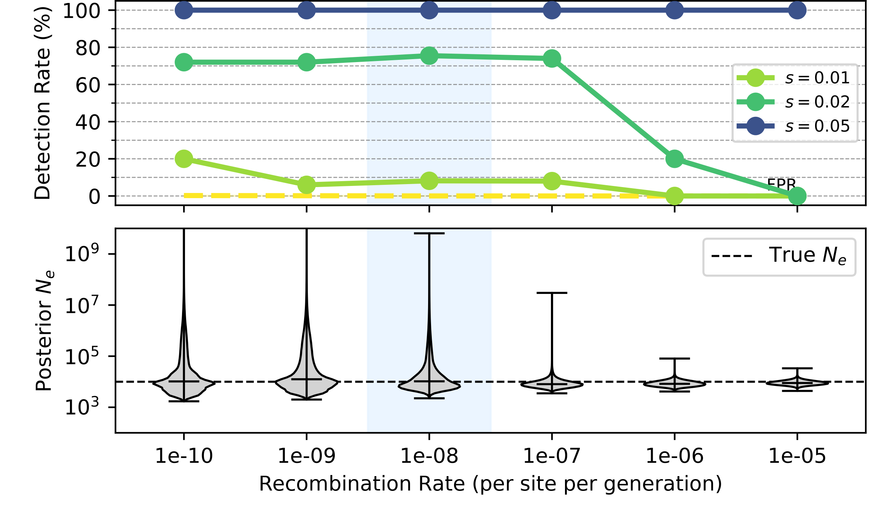
Performance Benchmarking
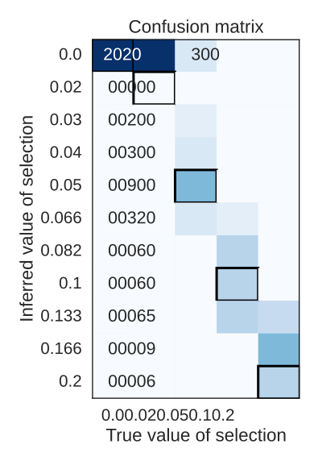
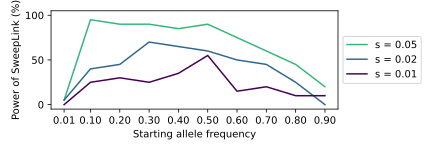
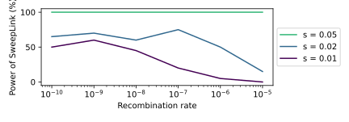
Real Data
British Ancient DNA
- Data analysed in Mathieson & Terhorst (2022) using bmws
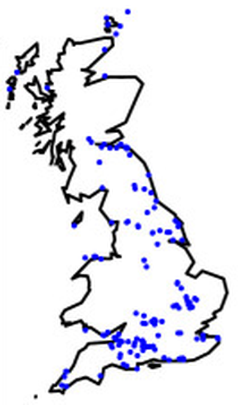
Sites: Mathieson & Terhorst (2022)
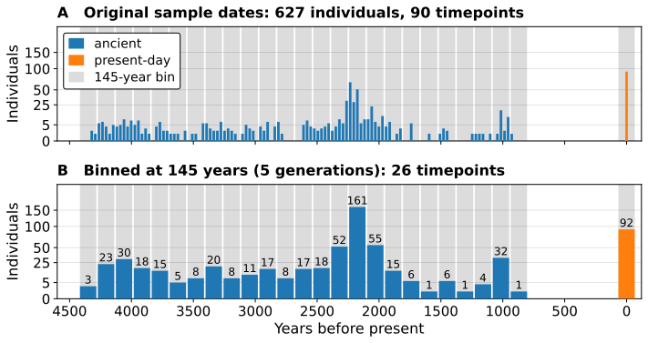
- 627 individuals (535 ancient, 92 present-day)
- 1240k SNP panel: 816,914 SNPs after filtering for missingness
- Two data types: capture (older than ~2,000 years), shotgun (younger and present-day)
Genome-wide Scan
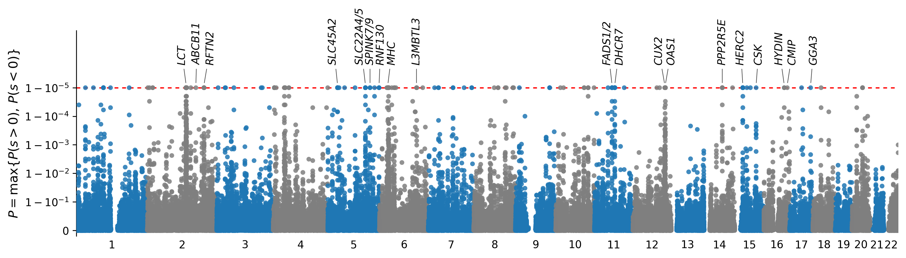
Red line: all 100,000 MCMC samples agree on the sign of $s$
- Identified 64 regions affected by selection (after QC)
- Population size inferred jointly: $N \approx 9{,}600$ (genome-wide)
- Recovered known targets: lactase (LCT), pigmentation (SLC45A2, HERC2), FADS1/2, vitamin D (DHCR7), OAS1
Comparison with Mathieson & Terhorst (2022)
| Locus | Target SNP | bmws $|\bar{s}|$ | SweepLink $|\hat{s}|$ | Selected SNPs | Favoured allele associated with |
|---|---|---|---|---|---|
| LCT | rs4988235 | 0.064 | 0.039 | 202 | more milk |
| SLC45A2 | rs16891982 | 0.043 | 0.031 | 15 | lighter skin |
| HLA | rs204994 | 0.042 | 0.024 | 31 | – |
| DHCR7 | rs7944926 | 0.051 | 0.025 | 20 | more vitamin D |
| HERC2 | rs12913832 | 0.017 | 0.022 | 12 | lighter skin |
| Below their cutoff | OAS1 ($P = 2.5\times10^{-7}$) and FADS1 ($P = 1.5\times10^{-5}$) — both detected here | ||||
| New targets | 57 more regions, 17 of them colocalise with a trait | ||||
Their cutoff: $P < 10^{-7}$. $|\hat{s}|$ at the paper’s target SNP
Lactase (LCT) Region

- Strongest signal in the genome: 202 selected loci across 2 Mb
- Colocalises with milk consumption GWAS (PP$_4$ = 0.99); the favoured allele is associated with more milk drinking
- Footprint matches the European LD block, in a recombination coldspot
Detected Regions
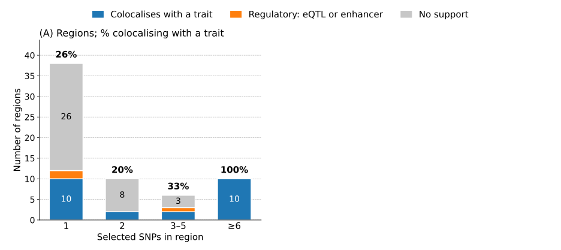
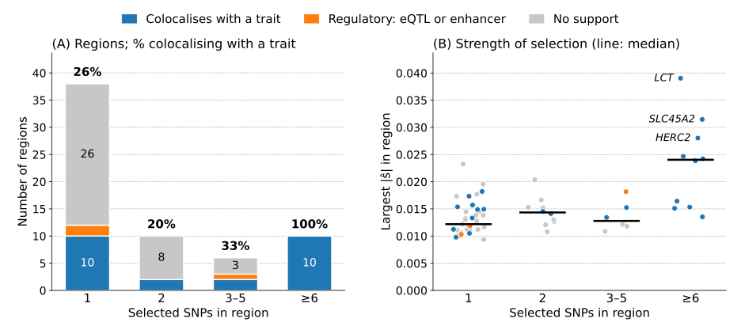
QC removed 16 of 80 regions with frequency jumps between sequencing technologies
Known Target: SLC22A4/5
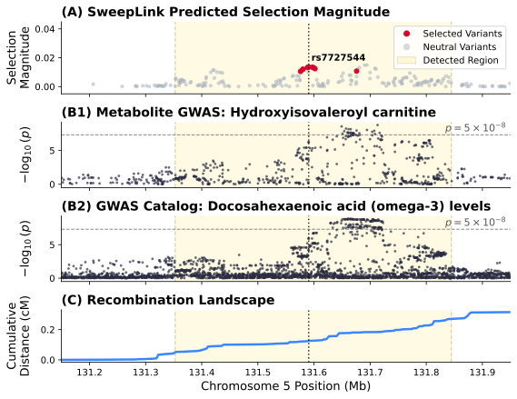
- 9 selected loci; not mentioned by Mathieson & Terhorst (2022)
- Both genes encode carnitine transporters, used in burning fat
- Colocalises with blood carnitine and omega-3 levels (PP$_4 \geq 0.99$)
- The favoured allele is associated with more omega-3 in the blood — the same direction as at FADS1/2
- It is also associated with higher risk of Crohn’s disease
Pigmentation: SLC45A2 and HERC2
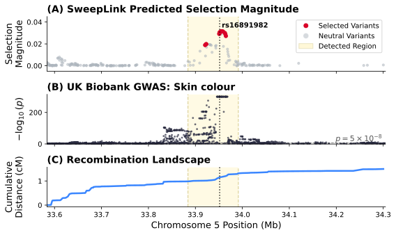
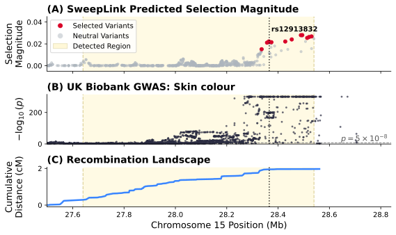
- SLC45A2: 15 selected loci, including rs16891982; colocalises with skin colour (PP$_4$ = 0.99)
- HERC2: 12 selected loci, including rs12913832 (eye colour); colocalises with skin colour (PP$_4$ = 0.95)
Below the 2022 Cutoff: OAS1
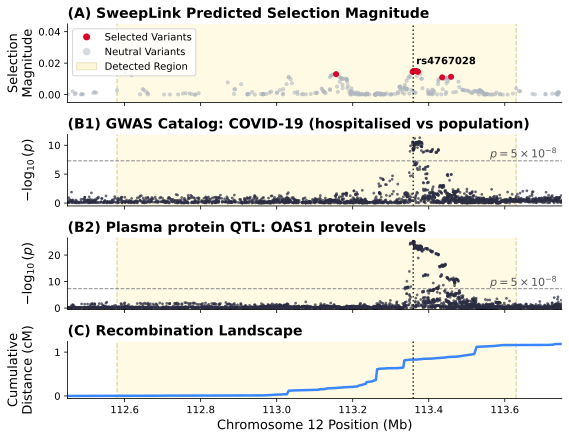
- Below genome-wide significance in Mathieson & Terhorst (2022); here 9 selected loci in one 1 Mb region
- Colocalises with OAS1 protein levels (PP$_4$ = 0.97): the favoured allele is associated with higher levels of this antiviral protein
- and with COVID-19 hospitalisation (PP$_4$ = 0.98): the favoured allele is associated with lower risk
Height: PPP2R5E
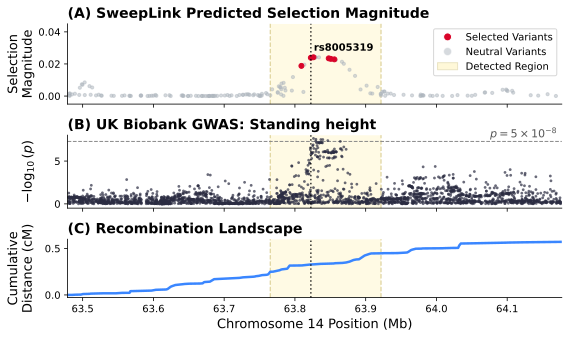
- 6 selected loci, $|\hat{s}|$ up to 0.024
- Colocalises with standing height (PP$_4$ = 0.98)
Kidney Function: RFTN2
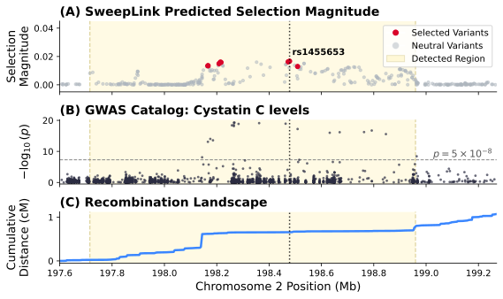
- 8 selected loci, $|\hat{s}|$ up to 0.016
- Colocalises with cystatin C levels (PP$_4$ = 1.00)
- Also colocalises with schizophrenia (PP$_4$ = 0.99)
Quality Control: HYDIN
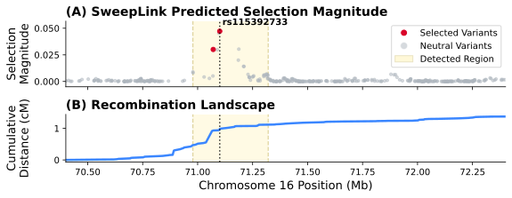
- Strongest single-SNP signal: rs115392733, $\hat{s} = 0.047$
- Allele at 47% frequency in shotgun-sequenced ancient samples, absent from capture-sequenced and present-day samples
- Sampling time and sequencing technology are confounded, so we screen selected SNPs for frequency jumps between technologies
Unexplained Regions That Look Like Sweeps
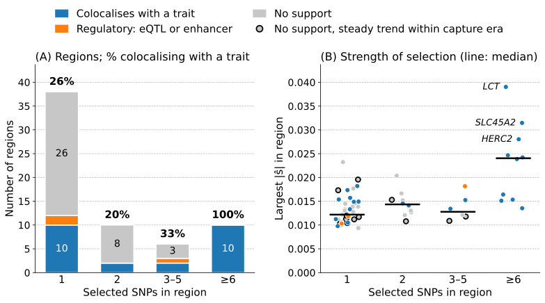
12 of 37 unsupported regions change steadily within the capture era (p < 0.05)
Unexplained Regions That Look Like Sweeps
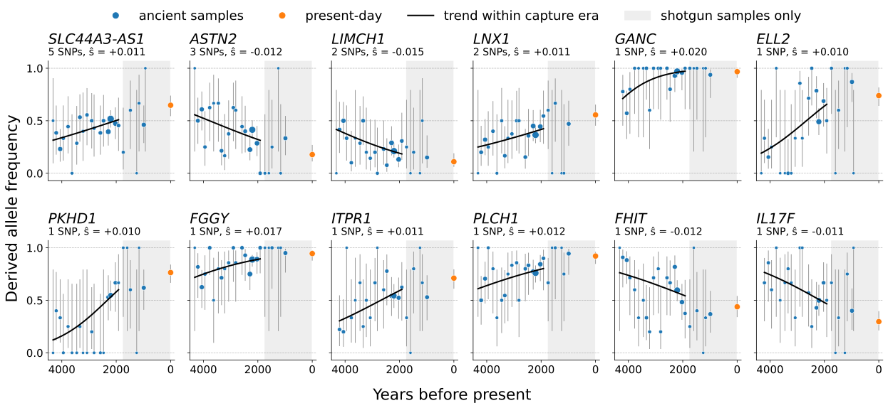
No colocalising trait or regulatory evidence
Still Deciding How to Filter
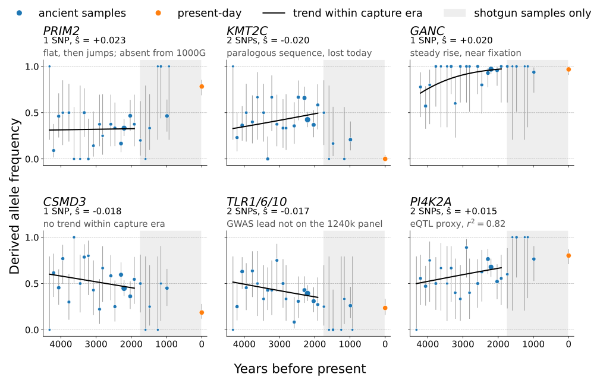
The six strongest regions without trait support: some look like real sweeps, others like artefacts
Real Human Data
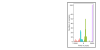
Real Data: Results
Conclusions
Conclusions
SweepLink:
- infers demography and linked selection jointly, genome-wide
- pools evidence across linked loci, so it shows increased sensitivity to weak selection than single-locus methods
- in British ancient DNA: recovers every previously reported region, and finds 64 in total, 24 of them colocalising with a trait
- reaches loci that fell below the earlier significance cutoff (OAS1, FADS1) without more samples
- open question: quality control for ancient DNA with mapping and sequencing technology biases
Thank you!
Acknowledgements
- Madleina Caduff
- Andreas Fueglistaler
- Anna Parker
- Christoph Leuenberger
- Daniel Wegmann
Preprint
bioRxiv